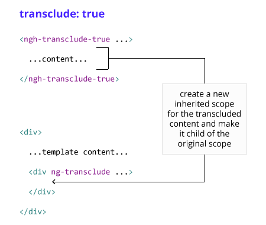

Direktiver = egne html-definisjoner
- Direktiver er en funksjon som kan utrette det du klarer å programmere, så en definisjon er vanskelig.
- Funksjonen til er direktiv kjøres når Angular-kompilatoren finner direktivet referert i DOMen.
- De bestemmer selv hvordan direktive skal refereres, slik som html
Hvorfor vil vi bruke det?
- Utvider HTML til noe mer sematisk med mulighet for tilpasning til domenet
- Unngår repetisjon
Direktiver i praksis
- Er foretrukne måte å få tak i DOM-elementer på i Angular
- Gir mulighet til å binde brukerevents, click, submit osv.
- Skrive ut data
Built in directives
Til vanlig er jeg usynlig
Built in directives
- ngApp
- ngModel
- ngController
- ngClick
- ngChange
- ngBlur
- ngFocus
- ngClass
- ngStyle
- ngRepeat
- ...
Egne direktiver
- er ikke skumlere enn de innebygde, du bruker dem hele tiden!
Egne direktiver
myApp.directive('myDirective', function(dep1, dep2) {
return {
/**
*
*
*
*
* API
*
*
*
*
**/
}
});
Egne direktiver - casing
Camel case blir til train-case
myApp.directive('ngTextArea', function(dep1, dep2) { //.....
myApp.directive('navFormSection', function(dep1, dep2) { //..
Egne direktiver - navngivning
ng-prefikset er reservert til bruk i Angular
myApp.directive('ngTextArea', function(dep1, dep2) {
return {
/** API **/
}
});
Vi prefikser gjerne med firma/domene etc
myApp.directive('gjeInformasjonstekst', function(dep1, dep2) {
return {
/** API **/
}
});
myApp.directive('navFormSection', function(dep1, dep2) {
return {
/** API **/
}
});
APIet
myApp.directive('myDirective', function(dep1, dep2) {
return {
replace: true,
restrict: 'EACM',
priority: 10,
templateUrl: 'directive.html',
template: '',
scope: { localName:'@' },
controller: function($scope, $element, $attrs, $transclude, dep1) {},
compile: function compile(tElement, tAttrs, transclude) {
},
link: function postLink(scope, iElement, iAttrs) {
scope.$watch('name', function(newVal, oldVal) {..}
}
}
});
replace
Avgjør hvorvidt direktivet skal erstatte elementet som kalte det, eller om direktivet skal bli et underelement av det originale elementet.
Default:
replace: false
restrict
E- Element name:<my-directive></my-directive>A- Attribute:<div my-directive="exp"></div>C- Class:<div class="my-directive: exp;"></div>M- Comment:<!-- directive: my-directive exp -->
Default:
A- Attribute:<div my-directive="exp"></div>
restrict - anbefalinger fra core-teamet
Element (E) og atributt (A) anbefales over klasse (C) og kommentar (M) på grunn av lesbarhet.
restrict - anbefalinger fra core-teamet
Bruk attributt når du legger til funksjonalitet på et eksisterende element.
- spinner
- ng-show og ng-hide
Bruk element når du lager en komponent hvor du kan kontrollere html-templaten. Use an element when you are creating a component that is in control of the template. The common case for this is when you are creating a Domain-Specific Language for parts of your template.
template og templateUrl
template gir deg mulighet til å inline skrive html som vil bli lagt på som et barneelement av direktivet.
templateUrl gjør at du kan flytte templatene dine ut i egne html-filer som lastes med ajax. Her trenger du kun legge en path til html-fila.
Ved minification kan disse også bygges inn i js-filer som en del av angular sin templateCache.
template og templateUrl
myApp.directive('myDirective', function(dep1, dep2) {
return {
templateUrl: 'path/to/external/template.html',
template: 'Klikk her',
};
});
link
myApp.directive('myDirective', function(dep1, dep2) {
return {
link: function(scope, element, attrs) {
// logikk
}
}
});
Fra dokumentasjonen:
- element is the jqLite-wrapped element that this directive matches.
- attrs is a hash object with key-value pairs of normalized attribute names and their corresponding attribute values.
Scope og variabler
Scope gir konteksten for å evaluere uttrykk i HTML-templaten.
link: function(scope, element, attr) {
scope.skalVises = false;
scope.navn = "BEKK"
}
...
{{ navn }}
Oppsett
- node
- Grunt
- Plugins
- konkatenering
- bygging av templates
- server
- watcher endringer
- karma test runner
- jasmine med angular-matchers
Litt mer om dependency injection
.directive('ngGithub', ['$http', function($http){
Egen service:
myApp.provider('greeting', function() {
this.$get = function() {
return function(name) {
alert("Hello, " + name);
};
};
});
$injector - som faktisk opprettet instansene av servicene
ngModel
Hva heter du?
Hei {{navn}} :D
ngModel.$viewValue
&
ngModel.$modelValue
$scope
Hva er scopes?
Objekter som referer til applikasjonsmodellen
Controller -> $scope <- View
Evaluering av uttrykk
1+2={{1+2}}-> 1+2=3{{username}}-> ingvilin
Propagerer events
Watch-er uttrykk:
scope.counter = 0;
scope.$watch('name', function(viewValue) {
scope.counter++;
});
Hierarkisk struktur som gjenspeiler DOMen


$rootScope
Prototypal inheritance
$rootScope- ...
$parent$scope
- ...

Går stortsett fint helt til ...
- ng-repeat
- ng-switch
- ng-view
- ng-include
...som lager sine egne scopes
Eksempel:
bekkApp.controller('KakeCtrl', function($scope) {
$scope.kaker = [
{ name: 'Sjokoladekake' }]
$scope.boller = [
'Skillingsbolle']
});
-
-
Kake: {{ kaker[0].name }}
Bolle: {{ boller[0] }}
Så husk "." i modellen din!
Prototypal inheritance - directives
| scope: false | bruker foreldrescopet (default) |
|---|---|
| scope: true | nytt child scope + prototypal inheritence |
| scope: { ... } | isolert scope |
Isolated Scope
scope: { ... }
| @ | Enveis-binding (string) |
|---|---|
| = | Toveis-binding (model) |
| & | Parent scope expressions binding (eks. funksjoner) |
Eksempel:
scope: {
ngModel: '=', // Binder ngModel til objektet
onSend: '&', // Referanse til metoden
fra: '@' // Lagrer strengen som er assosiert med fra
}
Oppgavetid
Testing!
Hvordan tester vi?
- Inkludere angular-mocks
- Bruker karma test runner, se oppsett i karma.conf.js og gruntfile
- Bruker et testrammeverk til å skrive testene, Jasmine
- Bruker både unit-tester og e2e-tester
grunt test, grunt test:cont og grunt test:live som kjører testene.
Jasmine-syntaks
describe('Testsuite', function(){
beforeEach(function(){
// gjør noe før hver test
});
it('en enkelt test', function(){
//handling
//assertion
expect(angular.jqueryobject).toHaveClass('error');
expect(object).not.toEqual({value: 4});
})
afterEach(function(){
// gjør noe etter hver test
});
})
En enkelt test kan kjøres med å kalle funksjonen iit i stedet for it.
Angular-testing
angular-mocksAngular-testing
beforeEach(module('min-modul'));
beforeEach(module('app/direktiv-template'));
Testing av direktiver
var elm, createElm;
createElm = function(element){
elm = angular.element(element);
scope = $rootScope;
$compile(elm)(scope);
scope.$digest();
};
//Opprett
createElm('
Tips til neste oppgave:
link: function(scope, element, attrs, ctrls) {
var en = true; //tilgjengelig i link-funksjonen
scope.to = false; //tilgjengelig i templatefil
scope.gjorNoe = function(){
....
}
}
Man kan legge på et nytt direktiv på et element i en templatefil
Oppgavetid
Transclude
.directive('myDirective', function() {
return {
restrict: 'E',
transclude: true,
scope: {},
templateUrl: 'mytemplate.html',
link: function (scope, element) {
}
};
});
Transclude
Eksempel:
bekkApp.directive("transcludeDirective", function() {
return {
restrict: 'E',
replace: true,
transclude: true,
template:
'' +
'Dette er innhold fra templaten
' +
'' +
'' +
''
Dette er innholdet som stod her fra før
Transclude som funksjon:
link: function(scope, element, attributes, ctrl, transclude) {
(...)
}
Oppgavetid
$watch
$watch(watchExpression, [listener], [objectEquality]);
scope.$watch('name', function(newValue, oldValue) {
scope.counter++;
});
scope.$watch(function() { //Listener function
return food;
}, function(newValue, oldValue) { // Change handler
if(newValue !== oldValue) {
scope.foodCounter++;
}
});
Eksempel:
replace: true,
scope: {
modell: '='
},
template: ' Teller: {{ teller }} ',
link: function(scope) {
scope.teller = 0;
scope.$watch(function () {
return scope.modell
}, function(new, old) {
if(newValue !== old) {
scope.teller++;
}
});
Kan også bruke $watch i controller-en
Hvordan funker det?
$digest
- En event trigges
- Vanlig JS-handlere eksekveres
- Hvis innenfor angular-contexten:
- For hver watch: "Har du endret deg?"
- Hvis Ja, gjenta til alle svarer nei
scope.$apply()
"Hey, kjør en digest-loop!"
Tilbake til directive-apiet:
-require
.directive('myDirective', function() {
return {
require: ['ngModel', '^form'],
link: function(scope, element, attrs, ctrls) {
var ngModel = ctrls[0];
var form = ctrls[1];
}
Oppgavetid
Formvalidering
- ng-valid
- ng-invalid
- ng-pristine
- ng-dirty
- ng-touched
- ng-untouched
- required
- pattern
- minlength
- maxlength
- min
- max
Oppgavetid
Flere oppgaver?
- Sjekk ut unicorn-direktivet eller markdown-direktivet til btford (angular-core-developer) som ligger bundlet med kildekoden vår.
- Prøv å lag nye directives:
- Spinner-attributt som dekker diven den ligger på
- Utvid menyen i templaten
- Lag og test et direktiv som henter html fra backend. Det skal kunne ta inn ett error-callback dersom noe går galt
- Noe som passer på prosjektet ditt?
- Sjekk ut templateCachen og hvordan grunt brukes til å bygge inn disse.
- Fortsett på formoppgaven med tester og la den sende inn httpkall som mockes med $httpBackend
Oppsummering
- Direktiv-tanken er ikke unik og denne kan vi ta med oss uansett rammeverk/bibliotek
- Dette er bare en smakebit på Angular
Kilder:
- https://docs.angularjs.org
- http://stackoverflow.com/questions/16828287/what-things-can-be-injected-into-others-in-angular-js/16829270#16829270